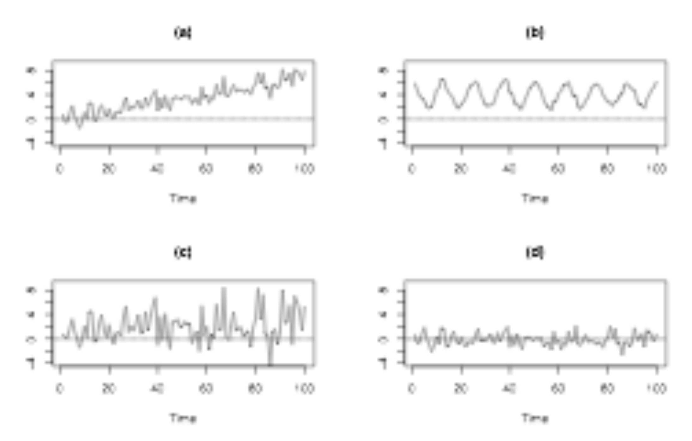

set.seed(123)
# Simulácia n = 50 pozorovaní modelu bieleho šumu
bielySum1 <- arima.sim(model = list(order = c(0, 0, 0)), n = 50)
head(bielySum1)[1] -0.56047565 -0.23017749 1.55870831 0.07050839 0.12928774 1.71506499Model bieleho šumu (WN) je základným modelom časového radu. Je tiež základom pre zložitejšie modely, ktoré budeme posudzovať. Zameriame sa na najjednoduchšiu formu bieleho šumu, nezávislé a identicky rozdelené údaje. Model bieleho šumu je najjednoduchším príkladom stacionárneho procesu, ktorý má:
Pozrime sa na niekoľko grafov časových radov bieleho šumu.
Na grafe A si všimnite, že v údajoch nie je žiadny vzor ani korelácia v čase. Na grafe B sa rad posunul nahor, čo naznačuje väčší priemer, ale v údajoch stále nie sú žiadne vzory. Na grafe C má rad väčšiu vertikálnu variabilitu, čo znamená väčší rozptyl, ale v údajoch stále nie sú žiadne vzory. A napokon v prípade garfu D má rad väčší priemer aj väčší rozptyl, ale opäť nemá jasný vzor alebo trend v čase. Všetky štyri obrázky sú príkladmi časových radov bieleho šumu.
Teraz sa pozrieme na štyri nové grafy. Otázka je : Ktorý z nich je biely šum?

Graf A má stúpajúci časový trend, jeho priemer nie je v čase konštantný, takže to nie je biely šum. Graf B má jasný periodický vzor s pevnou dĺžkou cyklu, ktorý sa opakuje približne každých 12 pozorovaní. Jeho stredná hodnota tiež nie je v čase konštantná, takže nejde o biely šum. Graf C vykazuje väčšiu variabilitu vpravo ako vľavo, to znamená, že sa zdá, že rozptyl v čase rastie. Keďže rozptyl nie je konštantný, tiež nejde o biely šum. Zostáva graf D, ktorý má podľa všetkého konštantnú strednú hodnotu aj rozptyl a žiadne jasné vzory alebo koreláciu v čase, takže spĺňa predpoklady modelu bieleho šumu.
Na simuláciu časového radu bieleho šumu možno použiť funkciu arima.sim(). ARIMA je skratka pre triedu modelov autoregresných integrovaných kĺzavých priemerov, ktoré budeme v tomto predmete uvažovať (budeme sa venovať v ARIMA modelom neskorších cvičeniach). V stručnosti si len uvedieme, čo znamenajú parametre modelu ARIMA, ktoré použijeme nižšie uvedenej funkcie. Model ARIMA(p, d, q) má tri časti, a to autoregresný rád p, rád integrácie (alebo diferencovania) d a rád kĺzavého priemeru q. Každú z týchto častí čoskoro podrobne popíšeme v neskorších cvičeniach, ale teraz si všimnime, že model ARIMA(0, 0, 0), t. j. so všetkými týmito zložkami nulovými, je jednoducho model bieleho šumu.
Je to veľmi široká trieda modelov časových radov, ktorá zahŕňa biely šum ako špeciálny prípad. Na špecifikáciu modelu bieleho šumu použijeme špeciálny rád špecifický pre biely šum, ako je znázornené v kóde (list(order = c(0, 0, 0)). Simuluje sa rad s n rovné päťdesiatim pozorovaniam. Niektoré simulované hodnoty bieleho šumu sú zobrazené pomocou funkcie head.
set.seed(123)
# Simulácia n = 50 pozorovaní modelu bieleho šumu
bielySum1 <- arima.sim(model = list(order = c(0, 0, 0)), n = 50)
head(bielySum1)[1] -0.56047565 -0.23017749 1.55870831 0.07050839 0.12928774 1.71506499Celý rad simulovaného bieleho šumu je znázornený na obrázku. Predvolený priemer a štandardná odchýlka pre rad sú nula, resp. jedna.
ts.plot(bielySum1)Simuláciu môžete zopakovať so strednou hodnotou rovnou štyrom a štandardnou odchýlkou rovnou 2 tak, že ich pridáte ako ďalšie argumenty, ako je znázornené v kóde. Na obrázku vidíme, že simulované hodnoty oscilujú okolo hodnoty 4 (priemer) na vertikálnej osi.
bielySum2 <- arima.sim(model = list(order = c(0, 0, 0)), n = 50, mean=4,sd=2)
head(bielySum2)[1] 4.506637 3.942906 3.914259 6.737205 3.548458 7.032941ts.plot(bielySum2)Nakoniec môžeme pre daný časový rad odhadnúť model bieleho šumu. Na to použijeme funkciu arima(), pričom najprv poskytneme údaje (premenná bielySum1), potom nastavíme rády modelu, ako je znázornené v kóde (list(order = c(0, 0, 0)).
arima(bielySum1, order = c(0, 0, 0))
Call:
arima(x = bielySum1, order = c(0, 0, 0))
Coefficients:
intercept
0.0344
s.e. 0.1296
sigma^2 estimated as 0.8401: log likelihood = -66.59, aic = 137.18mean(bielySum1)[1] 0.03440355var(bielySum1)[1] 0.8572352sqrt(var(bielySum1))[1] 0.92587Táto funkcia vráti odhad strednej hodnoty alebo interceptu, ktorý je pre tento časový rad približne 0.0344, približnú štandardnú chybu tohto odhadu strednej hodnoty, v tomto prípade 0.1296, a odhad rozptylu alebo sigma kvadrát, ktorý bol 0.8401. Odhadovaná štandardná odchýlka je samozrejme odmocninou z tohto odhadu rozptylu. Alternatívne môžete použiť funkcie mean() a var() na priamy odhad parametrov strednej hodnoty 0.0344 a rozptylu modelu bieleho šumu 0.8572. Podobne môžeme spraviť aj pre druhý rad bieleho šumu reprezentovaný premenou bielySum2:
arima(bielySum2, order = c(0, 0, 0))
Call:
arima(x = bielySum2, order = c(0, 0, 0))
Coefficients:
intercept
4.2928
s.e. 0.2535
sigma^2 estimated as 3.214: log likelihood = -100.13, aic = 204.27mean(bielySum2)[1] 4.292817var(bielySum2)[1] 3.279339sqrt(var(bielySum2))[1] 1.810894Náhodná prechádzka alebo RW je jednoduchý príklad nestabilného alebo nestacionárneho procesu a má tieto vlastnosti:
Pozrime sa na niektoré grafy časových radov náhodnej prechádzky.
Na grafe A si všimnite, že v rade je silná stálosť. Susedné pozorovania sú podobné a náhodne sa objavujú krátke trendy smerom nahor a nadol. Niekoľkokrát pretína prerušovanú vodorovnú nulovú čiaru. Graf B vykazuje mnohé z tých istých znakov. Graf C začína blízko nuly, ale potom sa pohybuje smerom nadol, zatiaľ čo graf D začína blízko nuly, ale potom sa pohybuje smerom nahor. Každý z nich je časovým radom náhodnej prechádzky.
Teraz sa pozrime na model náhodnej prechádzky. Je definovaný rekurzívne.
\(Dnes = Včera + Šum\)
Dnešné alebo aktuálne pozorovanie sa rovná včerajšiemu alebo predchádzajúcemu pozorovaniu plus šum alebo chyba. Viac formálny zápis:
\(Y_t = Y_{t-1} + \epsilon_t\)
Táto chyba \(\epsilon_t\) je konkrétne biely šum so strednou hodnotou (priemerom) 0. V praxi si simulácia časového radu náhodnej prechádzky vyžaduje:
Vzhľadom na bod \(Y_0\) a prvý člen bieleho šumu vygenerujete prvé pozorovanie Náhodnej prechádzky ako \(Y_1 = Y_0 + \epsilon_1\) a potom pokračujete k časovému indexu dva, kde \(Y_2 = Y_1 + \epsilon_2\) . Často sa pre jednoduchosť ako počiatočný bod \(Y_0\) používa hodnota nula. Musíte si dopredu nagenerovať aj hodnoty bieleho šumu, čo sme už urobili vyššie.
Výrazy v náhodnej prechádzke sa dajú usporiadať ako rad prvej diferencie. Tu vidíte, že rozdiel medzi aktuálnym pozorovaním \(Y_t\) a predchádzajúcim pozorovaním \(Y_{t-1}\)
\(Y_t - Y_{t-1} = \epsilon_t\)
sa rovná členovi šumu \(\epsilon_t\). To znamená, že rozdielový rad alebo rad zmien je biely šum.
Najprv si zadefinujeme rad náhodnej prechádzky a premennej dáme názov randomWalk. Budeme mať časovú radu o dĺžke 50, pretože biely šum 1 mal toľko hodnôt. Rad inicializujeme nulovými hodnotami. Vypočítame prvý člen radu náhodnej prechádzky keďže sme už definovali \(Y_0\) ako prvú hodnotu v rade, ktorá bola inicializovaná hodnotou nula. Potom využijeme iteračný cyklus “for” a dorátame jednotlivé časové kroky od 2 až po 50 rekurzívne.
randomWalk <- rep(0,length(bielySum1))
#vypočítame prvý člen radu náhodnej prechádzky
randomWalk[1] <- randomWalk[1] + bielySum1[1]
for (i in 2:length(bielySum1)) {
randomWalk[i] <- randomWalk[i-1] + bielySum1[i]
}
plot(randomWalk,type="b", xlab="čas",ylab="hodnoty náhodnej prechádzky", main="Náhodná prechádzka s použitím bieleho šumu 1")Na obrázku genereovaného R kódom vidíme simulovanú nahodnú prechádzku.
Ak začnete s časovým radom náhodná prechádzka (randomWalk), a použijete funkciu diff() v R na výpočet rozdielového radu, výsledok tejto jednoduchej transformácie uvidíte, že rozdiely alebo zmeny či prírastky časového radu randomWalk sú radom bieleho šumu 1. Teraz sa pozrieme na priebeh prvých diferencií.
prveDiffRW <- diff(randomWalk)
plot(prveDiffRW,type="b",xlab="čas",ylab="hodnoty prvých differencií náhodnej prechádzky",main="Prvé differencie náhodnej prechádzky s použitím bieleho šumu 1")mean(prveDiffRW)[1] 0.04654394var(prveDiffRW)[1] 0.8675713sqrt(var(prveDiffRW))[1] 0.9314351mean(bielySum1[2:50])[1] 0.04654394var(bielySum1[2:50])[1] 0.8675713Vidíme z výsledku, že rad prvých diferencíí náhodnej prechádzky má priemer blízky nule a rozptzl blízky k 1.Graf naynačuje, že sa pôvodný rad bieleho šumu 1 a prv0 differencie náhodnej prechádzky rovanjú. Chýba nám prvý údaj lebo pri differenciácii vypadne prvý údaj.Teda overíme to tak, že vypočitame priemer a štandardnú odhchýlku pre pozorovania 2 až 50 bieleho šumu 1 a dostávame tie isté hodnoty ako pre rad prvých diferencií.
Model náhodnej prechádzky možno rozšíriť o koeficient driftu (posun, pomalá zmena). Tým sa do rekurzívneho vzorca pridá konštanta C.
\(Y_t = C + Y_{t-1} + \epsilon_t\)
Náhodná prechádzka s driftom má dva parametre, driftovú konštantu C a sigma-kvadrát rozptylu bieleho šumu \(\sigma^2_{\epsilon}\). Aký je prvý diferenčný rad náhodnej prechádzky s driftom? Je to jednoducho konštanta plus šum, čo je proces bieleho šumu so strednou hodnotou C.
c <- 0.3
randomWalkDrift <- rep(0,length(bielySum1))
#vypočítame prvý člen radu náhodnej prechádzky
randomWalkDrift[1] <- randomWalkDrift[1] + bielySum1[1]
for (i in 2:length(bielySum1)) {
randomWalkDrift[i] <- c + randomWalkDrift[i-1] + bielySum1[i]
}
plot(randomWalkDrift,type="b", xlab="čas",ylab="hodnoty náhodnej prechádzky", main="Náhodná prechádzka s použitím bieleho šumu 1 a driftom c=0.3")Vidíme, že konštanta c vlastne vytvára lineárny trend pre náhodnú prechádzku s driftom. Kedže hodnoty bieleho šumu sú malé a pohybujú sa od =2 do 2, časom je tam vidieť nejaký výkyv okolo rastúceho lineárneho trendu, ale čím bude c väčšie tým budú výkyvy okolo trendu vidieť menej lebo hodnota trednu pre daný časový bod je väčšia ako samotný biely šum. Drift teda unáša hodnoty s lineaárnym trendom rastúcim smerom ak c je kladné, klesajúcim ak c je záporné. Teraz urobme prvé differencie náhodnej prechádzky s driftom.
prveDiffRWDrift <- diff(randomWalkDrift)
plot(prveDiffRWDrift,type="b",xlab="čas",ylab="hodnoty prvých differencií náhodnej prechádzky s driftom c=0.3",main="Prvé differencie náhodnej prechádzky s použitím bieleho šumu 1")mean(prveDiffRWDrift)[1] 0.3465439var(prveDiffRWDrift)[1] 0.8675713sqrt(var(prveDiffRWDrift))[1] 0.9314351mean(bielySum1[2:50])[1] 0.04654394var(bielySum1[2:50])[1] 0.8675713Takže vidíme, že prvé diferencie radu náhodnej prechádzky s driftom c=0.3 je tiež proces bieleho šumu len priemerná hodnota nieje 0, a je posunutá o konštantu c. Teraz skúsme vygenerovať biely šum so strednou hodnotou 0.3 a štandardnou odchýlkou 1.
bielySumDrift <- arima.sim(model = list(order = c(0, 0, 0)), n = 50, mean=0.3)
head(bielySumDrift)[1] -0.41040656 0.55688371 0.05330812 -0.04754260 -0.65161857 0.25497228ts.plot(bielySumDrift)mean(bielySumDrift)[1] 0.04609957var(bielySumDrift)[1] 0.9787816sqrt(var(bielySumDrift))[1] 0.9893339arima(bielySumDrift, order = c(0, 0, 0))
Call:
arima(x = bielySumDrift, order = c(0, 0, 0))
Coefficients:
intercept
0.0461
s.e. 0.1385
sigma^2 estimated as 0.9592: log likelihood = -69.91, aic = 143.81Vidíme, že grafy prvých differencií a bieleho šumu s driftom s priemerom 0.3 a štandardnou odhýlkou 1 sa podobajú.Odhad priemeru bieleho šumu s driftom presne nevyšiel na 0.3, ale je tam určitá chyba a teda v rámci chybz sa nachádza aj hodnota 0.3. Nemohli sme drift zvoliť väčší lebo by sme nevideli tie výkyvy okolo rastúceho trendu. Zvoľme si drift napríklad 1 a uvidíme, že prvé differencie budú radou bieleho šumu s priemerom 1.
c <- 1
randomWalkDriftVelky <- rep(0,length(bielySum1))
#vypočítame prvý člen radu náhodnej prechádzky
randomWalkDriftVelky[1] <- randomWalkDriftVelky[1] + bielySum1[1]
for (i in 2:length(bielySum1)) {
randomWalkDriftVelky[i] <- c + randomWalkDriftVelky[i-1] + bielySum1[i]
}
plot(randomWalkDriftVelky,type="b", xlab="čas",ylab="hodnoty náhodnej prechádzky", main="Náhodná prechádzka s použitím bieleho šumu 1 a driftom c=1")prveDiffRWDriftVelky <- diff(randomWalkDriftVelky)
plot(prveDiffRWDriftVelky,type="b",xlab="čas",ylab="hodnoty prvých differencií náhodnej prechádzky s driftom c=1",main="Prvé differencie náhodnej prechádzky s použitím bieleho šumu 1")mean(prveDiffRWDriftVelky)[1] 1.046544var(prveDiffRWDriftVelky)[1] 0.8675713sqrt(var(prveDiffRWDriftVelky))[1] 0.9314351mean(bielySum1[2:50])[1] 0.04654394var(bielySum1[2:50])[1] 0.8675713bielySumDriftVelky <- arima.sim(model = list(order = c(0, 0, 0)), n = 50, mean=1)
head(bielySumDriftVelky)[1] 1.787738847 1.769042241 1.332202579 -0.008376608 0.880547393
[6] 0.719604665ts.plot(bielySumDriftVelky)mean(bielySumDriftVelky)[1] 1.038807var(bielySumDriftVelky)[1] 0.8667145sqrt(var(bielySumDriftVelky))[1] 0.930975arima(bielySumDriftVelky, order = c(0, 0, 0))
Call:
arima(x = bielySumDriftVelky, order = c(0, 0, 0))
Coefficients:
intercept
1.0388
s.e. 0.1303
sigma^2 estimated as 0.8494: log likelihood = -66.87, aic = 137.73Tu už vidieť, že rozdiel prvých diferencií je biely šum s priemerom 1.